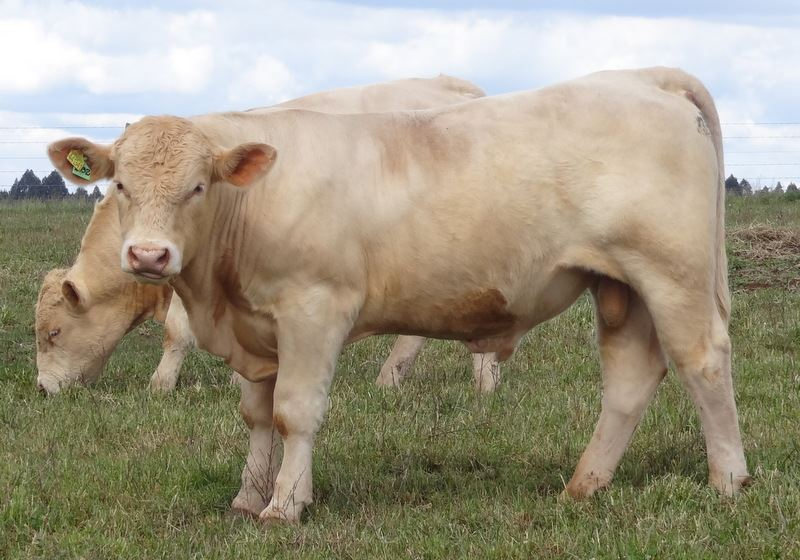

Conheça as raças
Angus
Provavelmente, você já ouviu falar sobre o hambúrguer do MC Donald’s feito com carne Angus, não é mesmo? Essa raça bovina taurina é um dos principais destaques no cenário produtivo do Brasil devido a algumas características interessantes, dentre as quais estão: atingir a puberdade e fase de abate mais cedo que outras raças, bem como ter uma carne extremamente macia. O investimento feito por algumas empresas na criação desses rebanhos contribuiu para a sua popularização.
Brahman
Embora tenha chegado ao Brasil há pouco tempo, em 1994, essa raça bovina é uma das mais populares pelo fato de ser o resultado do cruzamento de raças como Nelore, Cangaian, Guzerá e Sindi. A primeira coisa que reparamos nesse bovino é que ele não possui chifres. Um excelente gado de corte que apresenta coloração em variações de cinza (entre o claro e o escuro) e vermelho. A raça possui proteção natural contra a ação de parasitas e insetos, além de apresentar ganho de peso rapidamente.

Caracu
Pode ser usado como gado de corte, leiteiro ou de tração, porém, a primeira função é a mais comum. A origem desse boi taurino é portuguesa, tendo sido trazida para o Brasil durante o período da colonização. A pelagem desse animal tem cores que variam do amarelo ao laranja. O que faz dessa raça uma das mais populares do Brasil é que tem boa resistência à parasitas e doenças endêmicas do país, bem como capacidade de engordar mesmo com pouco pasto a disposição.

Charolês
De origem francesa, essa raça de boi taurino é muito usada para dar origem ao gado mestiço, como o Canchim. No Brasil, é um gado muito comum no segmento de corte e tem na coloração da pelagem a sua característica mais marcante – varia entre o tom branco e o creme. As narinas desse boi têm coloração rosada e ele tem excelente resultado ao ser criado em sistema de confinamento.
Gir
Uma das principais raças do segmento de gado leiteiro tem sua origem nas montanhas Gir, na Índia – de onde veio seu nome. A característica que mais se destaca nessa raça bovina é a presença de chifres compridos e que são torcidos para baixo. As orelhas desses animais têm um enrolado diferenciado na parte de cima. Os pelos podem variar da coloração amarela à vermelha, com a presença de pintas. Por ser um animal de índole dócil é excelente para criação.
Fonte